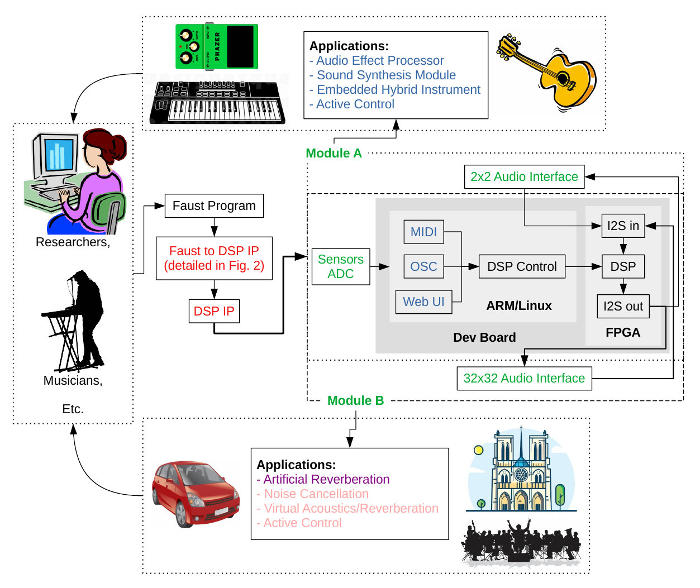

Overview of FAST
This section provides a general overiew of the FAST project. The main outcomes and results of FAST are presented in a dedicated page.
Challenges and State of the Art
Despite the wide variety of available platforms, programmable systems for real-time digital audio signal processing are often limited by latency, computational power, and their ability to handle a large number of audio channels in parallel. Some application areas require exceptional performance in these aspects. Room acoustic active control, for instance, involves using a large number of speakers and microphones, executing complex algorithms in parallel, and achieving very low latencies on the order of tens of microseconds.
Field-Programmable Gate Arrays (FPGAs) are the only programmable platforms capable of delivering the performance required for such applications. However, programming them is extremely complex and requires specific skills that most audio signal processing engineers do not possess. High-Level Synthesis (HLS) offers a general solution to this problem by enabling FPGAs to be programmed using high-level languages such as C, C++, Python, etc. Still, for specific applications, HLS remains highly complex and therefore largely inaccessible.
Several projects have sought to make HLS more accessible in various fields such as image and video processing, control systems, and more. Audio, however, had never benefited from such efforts—until the FAST project.
More broadly, it has been shown that Domain-Specific Languages (DSLs) can provide an effective way to make programming certain embedded platforms more accessible. Faust is a domain-specific programming language developed by one of the FAST partners. It aims to make the development of audio signal processing applications more accessible. Faust is used by a wide community of artists, hobbyists, and non-specialist engineers worldwide. More specifically, Faust supports programming a variety of embedded platforms such as microcontrollers, Digital Signal Processors (DSPs), and others.
Until the FAST project, however, Faust could not be used to program FPGAs. FPGAs operate very differently from other types of processors by providing access to "programmable logic." Efficient programming of FPGAs requires considering numerous factors such as parallelization, pipelining, use of fixed-point arithmetic, and more. As a result, creating a compilation toolchain from Faust to FPGAs is a complex task that had not been explored prior to FAST. Additionally, the use of programmable FPGA platforms for room acoustic active control had also seen very limited exploration before this project.
Objectives

The main objectives of the FAST project were:
- To make FPGA programming more accessible for real-time audio signal processing through the Faust programming language;
- To develop an accessible and programmable platform for ultra-low-latency multichannel audio signal processing;
- To explore the use of this platform for room acoustic active control applications.
Two approaches were considered for building a compilation toolchain from Faust to FPGAs. The first involved adding an "VHDL backend" to Faust, allowing the generation of VHDL code directly from a Faust program. The second was based on using High-Level Synthesis (HLS), which required developing a dedicated Faust backend that generates optimized C++ code suitable for HLS.
In both approaches, the goal was to delegate to Faust the responsibility of distributing computations between the CPU and the FPGA available on the prototyping boards used (e.g., Digilent Zybo Z7 and Genesys), as well as managing memory usage (DDR). More broadly, it was essential to produce highly optimized code. To achieve this, several scientific and technical challenges had to be addressed, such as automating parallelization, pipelining, and fixed-point code generation — which is typically more efficient than floating-point code on FPGAs.
At the start of the project, we believed that fixed-point optimization would be the most critical factor for performance. However, it turned out that effective pipelining and parallelization had an even greater impact.
Before FAST, no open, programmable, FPGA-based hardware platform existed that could handle a large number of audio channels in parallel with sufficiently low latency for active room acoustic control applications. One of FAST's objectives was therefore to develop FPGA-based hardware boards that met these specifications. In parallel, the project also aimed to create a complete software suite to manage the entire system: real-time application control, compilation options, visualization of compilation results, and more.
Another objective of FAST was to use the hardware platforms developed during the project for applications involving active noise control and sound field control over extended spatial areas. This included implementing classic active control algorithms — such as feedback and feedforward (Fx-LMS) — in the Faust language and compiling them to run on the Zybo and Genesys platforms used at the core of the project.
Methods and Approaches
FAST was organized into six work packages:
- Fixed-point computation in Faust
- FPGA backends for Faust
- Hardware platforms for audio processing
- Audio signal processing module
- Artificial reverberation
- Spatial active noise control
In Work Package 1, the goal was to enable Faust to generate fixed-point DSP code. This required investigating the feasibility of implementing an automatic signal format inference system within the Faust compiler. This work was carried out by Agathe Herrou during an 18-month postdoctoral position at GRAME. It laid the groundwork for such a mechanism, though it did not result in a fully functional system. As of now, the Faust compiler is still not capable of producing fixed-point code in a generalized way.
Work Package 2 focused on providing a functional compilation toolchain from Faust to FPGAs by AMD/Xilinx. As previously mentioned, two approaches were considered: one based on High-Level Synthesis (HLS), and another in which the Faust compiler directly generates VHDL code. The first approach allowed us to establish a complete compilation chain from Faust to FPGAs. This work was carried out by Maxime Popoff (PhD student at INSA). A prototype of a "Faust to VHDL" compiler was also developed as part of the second approach, but it currently has several limitations and is not yet usable for practical applications. This work was carried out by several successive interns at INSA.
In parallel with this, significant effort was devoted to developing HLS optimization techniques tailored to real-time audio signal processing applications. This work has been thoroughly documented and can lead to performance gains of up to tenfold in certain cases. Prior to the start of the FAST project, we had not fully appreciated the importance of this task.
Work Package 3 aimed to develop a series of external boards to adapt generic FPGA evaluation modules (Digilent Zybo Z7-10/20 and Genesys) for ultra-low-latency multichannel audio applications. This work was also carried out by Maxime Popoff. Overall, the objectives of this work package were fully achieved —and even exceeded.
Work Package 4 aimed to use the systems developed in the previous work packages for practical musical applications (e.g., synthesis or sound processing modules, etc.). To do this, it was necessary to implement tools for controlling the parameters of DSP programs running on the FPGAs. Hardware controllers were developed in this context, along with a software infrastructure that enables the use of standard control methods such as USB MIDI, Open Sound Control (OSC), web interfaces, etc., made possible through the use of an embedded Linux system. This work was carried out by Maxime Popoff and Pierre Cochard (engineer in the Emeraude team at INSA). Overall, the objectives of this work package were fully achieved — and even exceeded.
In Work Package 5, the objective was to deploy artificial reverberation algorithms based on impulse response convolution on the FPGA platform developed in the previous work packages. Several approaches were explored for this purpose. First, a modal approach, in which each resonance mode of a room is implemented using a second-order IIR filter (biquad). This type of algorithm is highly parallelizable and thus well suited for FPGAs. Second, a partitioned convolution approach, where the convolution operations can be "split" and therefore potentially pipelined and parallelized. Since the modal approach proved too destructive, we ultimately favored the partitioned convolution method, which is also more standard. The deployment of this type of inherently complex algorithm was greatly facilitated by Syfala. By the end of WP5, we were able to process a "dry" multichannel sound on an FPGA to produce virtual acoustic renderings. This work was primarily carried out by Rémi Jeunehomme during an internship at GRAME. Although it has not yet led to concerts as initially planned in the FAST project proposal, GRAME is currently exploring the potential use of this technology in an upcoming artistic production.
In Work Package 6, spatial active noise control applications were explored. The initial goals aimed to enable real-time control of a sound zone (possibly mobile) in space. Classical multi-point active control algorithms (MP-FxLMS) as well as algorithms using sound field decomposition into spherical harmonics (SH-FxLMS) were to be evaluated. These goals were partially achieved using the technologies developed in FAST. A fixed zone was successfully controlled in real-time. However, the frequency range and size of the zone were limited by the computational power available at the time. This work was carried out by Loïc Alexandre as part of his doctoral thesis, under the supervision of Pierre Lecomte, Marie-Annick Galland, and Alain Berry.
Impact and Outcomes
Syfala is now being used outside the FAST project. Stanford University (USA) has set up a replica of the WFS system mentioned in the previous result. Maynooth University (Ireland) is using Syfala to prototype audio systems operating at high sampling rates. A Swiss company, Sonotrex, is using Syfala to implement active acoustic control systems. The Swedish public radio is using Syfala to prototype new low-latency mixing consoles. GRAME is expected to use the FAST technologies in several upcoming artistic projects. Additionally, a "Syfala" workshop, bringing together about fifteen participants, was held in December 2023 at INSA Lyon.
The work conducted in FAST led to the creation of a startup "Polyphonic" by Maxime Popoff (former FAST PhD student) focused on the technologies developed within the project. This startup is currently being funded by the Inria Startup Studio.
More broadly, FAST has contributed to the democratization of FPGA usage in the field of real-time audio signal processing.
Scientific and Technical Challenges
Despite the significant work carried out in the FAST project, several scientific and technical challenges remain.
The first challenge is related to the management of fixed-point calculations in the Faust compiler, which did not progress enough during FAST to result in an operational system that can be generalized to all Faust programs. The production of fixed-point DSP code would improve efficiency, thus paving the way for more complex applications.
The optimization methods based on HLS discovered during FAST have not yet been incorporated into the Faust compiler, which makes the "Faust mode" of Syfala much less efficient than the C/C++ mode.
The general architecture of the Faust compiler is not necessarily well-suited for generating efficient code for HLS, which prevents the porting of optimization techniques developed in FAST. Significant work will continue in this direction after FAST.
The Faust-to-VHDL compiler prototype developed during FAST remains limited and is not generalizable to all Faust programs. Additionally, its mode of operation is still quite primitive and does not yet support pipelining or automatic parallelization, nor the management of external memory (DDR). Having an operational Faust-to-VHDL compiler could allow us to bypass proprietary HLS tools, which are essentially "black boxes" over which we have limited control.
Active control algorithms require multichannel filtering using convolutions, which can be very memory - and computation - intensive when the frequency band to be processed is large and the number of channels increases. This remains a bottleneck, as it has been difficult to process bands wider than just a few Hz with the hardware developed during the FAST project. Work on fast convolution algorithms (via Fourier transforms) is still needed to improve the current performance of the controllers provided by Syfala.
Perspectives
Overall, the FAST project has opened up a large number of new research and development avenues, which we attempt to summarize in this section.
First, we aim to continue the development of Syfala, which aspires to become an essential tool for programming FPGAs for real-time audio signal processing applications. One of the first tasks in this direction is to port the HLS optimization techniques discovered in FAST to the Faust language so that it becomes a leading programming tool for such applications. In the absence of an efficient fixed-point management mode in Faust, an alternative solution could be to use the FloPoCo tool (https://flopoco.org/), which implements optimized operators in C++ for FPGA.
During FAST, we realized the potential of using FPGAs in the context of sound field synthesis, sound spatialization, and setting up immersive virtual acoustics experiences. So far, we have only scratched the surface of these types of applications, which seem very promising, especially in the context of virtual reality. This is why we have recently submitted a new ANR project in this direction, combining FPGA usage with distributed computing approaches to set up systems for high-fidelity virtual acoustics. In parallel with this potential future project, and as mentioned in previous sections, Maxime Popoff (former FAST PhD student) has initiated a startup project aimed at developing applications for sound spatialization based on the technologies developed in FAST.
We also hope to continue working on more specific aspects, such as implementing Sigma-Delta ADCs or exploring the use of our system for active control of musical instruments.
For spatial active noise control aspects, the hardware that can be programmed via Syfala has shown very encouraging results, even comparable to what an expensive commercial controller can achieve. The ease of programming allows for the rapid deployment of a real-time solution. Current limitations in computational power require rethinking the perspectives toward smaller control zones, such as around the user's ears, for example. We will need to rethink the control signal calculation algorithms to make them as computationally efficient as possible.